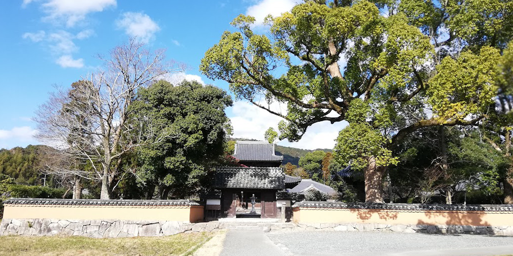
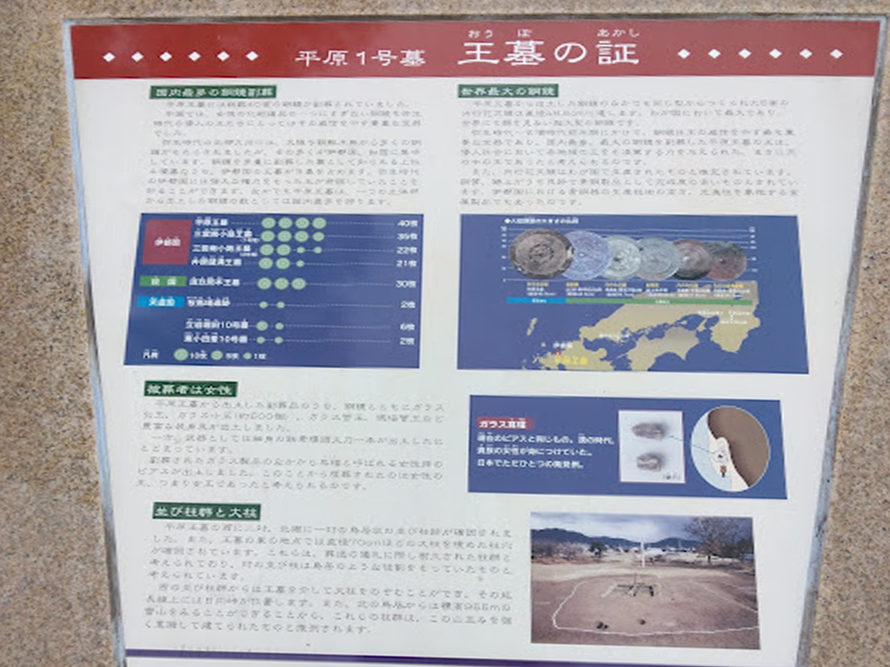
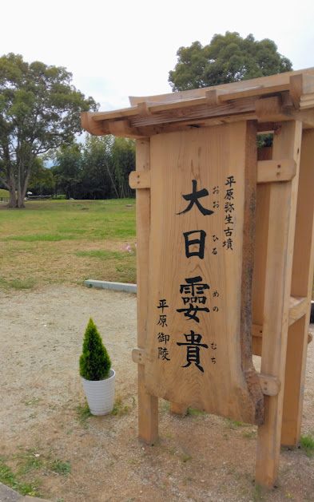
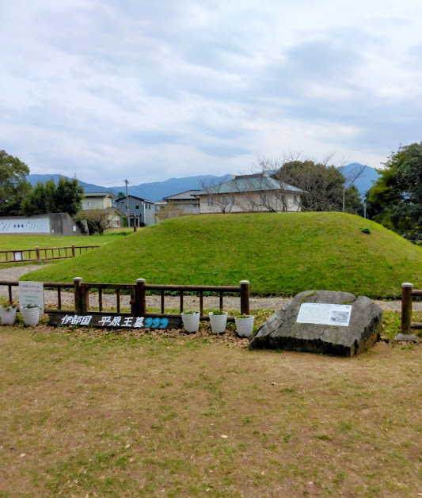
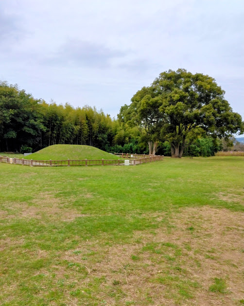

史跡を訪れるたび、私はその場所で起こった出来事だけではなく、その時代を生きた人々の姿を思い浮かべます。
人々は何を見つめ、何を感じ、どんな暮らしを送っていたのだろう。
そして、その歴史の裏側には、どのような想いがあったのだろう。
遺跡の中に立ち、その場所に吹く風に耳を澄ませていると、遠い時代の人々の暮らしや想いが、不思議と心に浮かんできます。
ここでは史実をたどるだけではなく、その背景にある時代の空気にも思いを巡らせながら、実際に歩いて感じた
「時の欠片」を拾い集めていきます。




2025年11月4日。少し肌寒さを感じる秋の日、私は福岡県糸島市へ向かった。
車を走らせていると、前方には「糸島富士」とも呼ばれる美しい可也山が姿を現す。
その整った山容を眺めていると、これから始まる伊都国の歴史探訪への期待が自然と膨らんでいった。
最初の目的地に到着して車を降りると、山から海へ向かって爽やかな風が吹き抜けていく。
『魏志倭人伝』には、魏の使者が「常に伊都国に駐在した」と記されている。
約1800年前、その使者たちもこの風を感じながら、この地で倭国の情勢を見守っていたのだろうか。
そんなことを思いながら周囲を見渡していると、伊都国が単なる一地方国家ではなく、外交と政治の重要な拠点だったことを改めて実感する。
そして私は、この地こそが後の邪馬台国へとつながる
政治システムの土台となった場所だったのではないか、そんな思いを抱きながら歩き始めた。
駐車場に車を止め歩いていると、まず目に入ったのは「伊都国のその後」と書かれた案内板だった。説明を読みながら園内を歩いていくと、やがて広々とした芝生の中に、静かにたたずむ平原王墓が姿を現す。 その手前には「大日孁貴（おおひるめのむち）」と力強く刻まれた木碑が建っていた。
その先に広がる平原王墓を目にした瞬間、私は思わず足を止めた。
「ここが、卑弥呼の祖先かもしれない人物が眠る場所なのか」もちろん、それは私自身が抱いた一つの思いであり、
歴史的に証明された事実ではない。それでも、この静かな空気の中に立っていると、
二千年前の女王が本当にこの地に眠っているような不思議な感覚に包まれた。
平原遺跡を後にして、私は伊都国歴史博物館を訪れた。 館内に入ると、実物大で復元された 平原一号墓が迎えてくれる。その大きさを目の当たりにすると、 この墓がどれほど特別な存在だったのかがよく分かる。 展示を見ていくと、もう一つの巨大な王墓「三雲南小路遺跡」に目を奪われた。
約2000年前に築かれた二基の巨大な甕棺からは、中国製銅鏡五十面以上をはじめ、金銅製四葉座飾金具や玉類など、他に類を見ない豪華な副葬品が出土している。 館内の展示や糸島市教育委員会の資料によれば、この遺跡は伊都国王の墓と考えられ、副葬品の内容などから、1号甕棺には王、2号甕棺には王妃が埋葬されたと考えられているという。
『魏志倭人伝』には「世々王有り」と記されているが、その言葉を裏付けるように、この地には卑弥呼よりはるか以前から王が代々この国を治めていたことがうかがえる。 博物館の展示を見ながら私は、伊都国が一代限りの小国ではなく、長い年月をかけて政治と外交を築き上げてきた王国だったことを強く感じた。そして、このような王たちの歴史が積み重ねられた先に、 平原王墓の女王もまた存在していたのかもしれない、そんな思いが自然と胸に浮かんできた。
伊都国について学ぶほど、私は一つの疑問を抱いた。 後漢から金印を授かった奴国は、『魏志倭人伝』では二万余戸という大きな国として記されている。一方、伊都国はわずか千余戸である。 しかし、その伊都国には「一大卒」という特別な役職が置かれ、魏の使者が常駐し、各国を監察する役割を担っていた。
なぜ、より大きな奴国ではなく、伊都国だったのだろう。もちろん、その理由は現在でも明らかになっていない。 ここから先は、あくまで私自身が現地を歩き、史料や展示を見て感じた一つの考えであり、歴史の可能性を探る私なりの視点である。
私は、伊都国には卑弥呼の時代より以前から政治と外交の中心として培われた伝統があり、その積み重ねが後の邪馬台国連合へ受け継がれていったのではないか、と考えている。 これは現時点で証明された歴史ではない。しかし、平原王墓、三雲南小路遺跡、『魏志倭人伝』の記述を一つひとつ見ていくと、私はそんな歴史の流れを思い描かずにはいられなかった。
平原王墓の日向峠へ向かう軸線、日本最大の内行花文鏡、代々の王たちの存在を物語る三雲南小路遺跡、そして『魏志倭人伝』に記された伊都国と一大卒。 これらはすべて実際に残された史料や遺跡である。しかし、その点と点を結ぶ線は、まだ完全には見えていない。
「平原王墓の主は誰だったのか」「卑弥呼とどのような関係があったのか」 「伊都国は邪馬台国とどのようにつながっていたのか」その答えは、今もなお歴史の中に眠っている。 だからこそ私は、歩き、見て、感じ、自分なりに考えることを大切にしたいと思う。
この旅を通して私が抱いた「伊都国は邪馬台国へとつながる政治的な土台だったのではないか」という思いも、その一つの仮説に過ぎない。 それでも平原王墓の前に立ち、風を感じ、遺跡や国宝を目の前にしたとき、二千年前の人々が確かにこの地で生きていたことだけは実感できた。 確証がないからこそ、自分の足で歩き、史料を読み、時の欠片を拾い集めていく。それこそが、私にとって歴史を旅する本当の楽しさなのだと、あらためて感じた。
※ このページは「歴史散歩」シリーズの第一回として公開しました。
・『魏志倭人伝』（『三国志』魏書・東夷伝・倭人条）
伊都国・一大卒など、本文で触れた記述の一次史料
・原田大六『実在した神話』
邪馬台国・伊都国をめぐる論点の理解のために参照した参考文献
・安本美典『卑弥呼の墓は、すでに発掘されている!!』
卑弥呼・王墓をめぐる諸説の一つとして参照した参考文献
・柳田康雄「弥生時代中・後期の『文字』の使用について」
文字資料・表記に関する背景理解のために参照した参考文献
※本文中の「仮説」「〜かもしれない」は、史料にない部分についての私見です。